Le projet
- BXL bibliothèques
- Application
- Emprunt de livres
- Rebranding
Rôles
- Branding
- Recherche UX
- Test utilisateurs
- Design UI
Livrables
- Prototypes cliquables
- Wireframes et IA
- User journey et persona
- Logo et illustrations
Logiciels
- Figma
- Illustrator
- Photoshop
1. Résumé du projet
Création d'une application pour emprunter facilement des livres à la bibliothèque.
Il faut une plateforme plus ergonomique pour emprunter et qui nous permette de réserver.
La plateforme (site web) actuelle des bibliothèques de Bruxelles n'est pas simple d'utilisation et ne permet pas aux individus de voir leurs emprunts facilement ni de réserver des livres.
Une application avec laquelle on peut voir en temps réel le catalogue des livres disponibles ainsi que nos emprunts et qui nous permette de réserver les livres de notre choix.
Ne pas avoir de mauvaises surprises en bibliothèque et découvrir aisément de nouveaux livres.
Grâce à cette application, les usagers des bibliothèques de Bruxelles pourront à tout moment consulter leurs emprunts et réserver les livres qui les intéressent.
2. Produit final
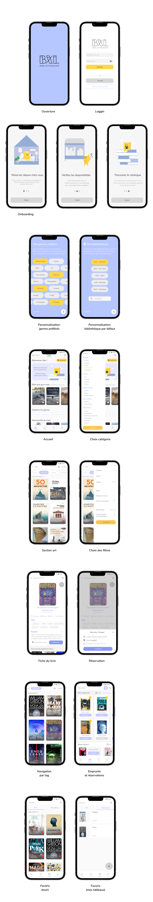
3. Compte rendu détaillé des recherches
Analyse compétitive / benchmark
Après une analyse de l'UX de 4 concurrents (2 applications d'emprunt de livres virtuels, 1 site web d'emprunt de livres physiques et 1 site web/application d'avis sur des livres) 3 pain points se sont détachés:
- Au niveau de la découverte des livres:
- Ce n'est pas facile de découvrir de nouveaux livres: il n'y a pas assez catégories de livres et pas assez de possibilités de filtrage (nombre de pages, langue,...)
- Une des applications avait un login wall (mur de connexion) au début, ce qui rendait impossible la consultation de l'application sauf si on créait un compte. De nombreux articles nous prouvent que les logins walls sont un frein à l'expérience utilisateur.
En effet, une part importante des utilisateurs veulent explorer l'application librement avant de décider s'ils vont s'y dédier pleinement. Ces utilisateurs seront plus enclins à quitter, voire supprimer l'application s'ils font face à un login wall. - Les plateformes où l'on peut emprunter ont un encart dédié aux emprunts mais il n'est pas assez clair, il faudrait qu'on puisse voir directement quand on doit rendre quelque chose et si on peut le prolonger - de plus il n'y a pas la possibilité de réserver un livre en ligne.
Login wall:
Au niveau du suivi des emprunts et réservations:
User interviews
J'ai conduit plusieurs interviews sur les habitudes de lectures sur base de plusieurs questions :
- Que lis-tu habituellement et dans quel but ? (articles, livres instructifs, romans,…)
- Qu'est-ce qui t'a fait choisir le dernier livre que tu as lu ?
- Quels paramètres prends-tu en compte lorsque tu choisis un nouveau livre ? (nombre de pages, couverture,...)
- Qu'est-ce qui pourrait améliorer ton expérience lorsque tu vas à la bibliothèque/faire que tu y ailles plus souvent ?
- Qu'est-ce qui pourrait améliorer ton expérience lorsque tu lis ?
Les points importants qui se sont détachés des interviews :
- Les individus choisissent un livre surtout suivant la couverture et/ou le résumé en plus du genre littéraire.
- Une part des individus aime choisir un livre selon sa taille car ils lisent à des endroits où avoir un livre encombrant ne serait pas pratique.
- Les personnes ont des doutes au niveau de la catégorisation de certains livres: "Parfois quand je ne suis pas en bibliothèque je ne sais pas dans quelle catégorie pourrait se trouver un livre car il correspond à plusieurs catégories."
- Pour certains livres, les personnes les préfèrent d'office avec des images: "Parfois j'emprunte des livres d'art et je suis déçu de découvrir qu'il n'y a pas d'images dedans une fois emprunté."
- Les retours les turlupinent parfois: "Je n'aime pas emprunter en bibliothèque car j'ai toujours peur d'oublier de rendre mes livres/les rendre en retard."
- La plus mauvaise expérience utilisateur: arriver en bibliothèque et découvrir que le livre qu'on allait emprunter n'est plus là.
- Une part des individus aime choisir leurs livres en se laissant surprendre par ce qu'ils découvrent en flânant dans la bibliothèque, sans avoir fait une présélection sur internet.
Competitive user test
Après plusieurs user tests sur le site de la bibliothèque de Bruxelles, j'ai vérifié qu'il n'était pas simple et même frustrant d'utilisation. Beaucoup de points sont ressortis, mais voici les plus importants:
- On ne comprend pas comment chercher des livres dans la bibliothèque qui nous intéresse.
- La recherche avancée, bien que compliquée, n'est pas du tout complète et est surtout très peu intuitive et décourageante; trop de choix pour certains paramètres mais pas assez pour d'autres: "C'est barbant, je ne m'y retrouve pas dans toute cette longue liste."
- La page d'accueil n'est pas assez personnalisée, plusieurs utilisateurs aimeraient y voir des livres à la une ou des suggestions; "C'est cool qu'ils indiquent les événements qu'ils organisent mais ce serait bien de voir des livres à la une aussi par exemple."
- Il y a un manque d'information sur la fiche du produit (pas de résumé, de nombre de pages, le nombre de tomes,...); "Ah il n'y a pas le résumé ? Je vais aller voir sur internet si ça me plait." Cela oblige l'utilisateur à se démener pour trouver lui-même les informations en sortant du site.
Card sorting
Après plusieurs card sorting, le classement général au niveau de l'architecture de l'information pour les genres de livres était comme suit:
- Romans
- Culture
- Bande dessinée
- Pour enfants
- Livres didactiques
Ce qu'il faut retenir:
De par ces différentes recherches, nous notons ces éléments qui devront absolument être dans l'application:
- Au niveau de l'application en général:
- Un système de réservation pour améliorer l'UX en bibliothèque physique (pas de mauvaises surprises).
- Une page d'accueil qui permet de découvrir de nouveaux livres.
- Une section qui reprend tous leurs emprunts et réservations et la possibilité d'être notifié quand la date d'échéance est proche.
- Un système de favoris pour que les utilisateurs gardent sous la main leurs découvertes.
- Il faut que l'utilisateur sache facilement pour quelle bibliothèque il fait ses recherches sur l'application. Sélectionner une bibliothèque pourrait être un choix par défaut pendant la phase d'onboarding.
- Une organisation du site complète mais intuitive par genres et sous-genres.
- Un système de filtrage qui permet aux utilisateurs d'affiner leur recherche dans les détails (ex: taille du livre, s'il contient des images,...).
- Une couverture et un résumé bien mis en avant pour chaque livre.
- Un maximum de détails sur la fiche du livre dont la taille, s'il contient des images, etc.
- Classer un livre dans plusieurs catégories en même temps grâce à des tags.
Au niveau de l'organisation des livres
Au niveau de la fiche produit
4. Quelques-uns des livrables développés après la recherche
Persona
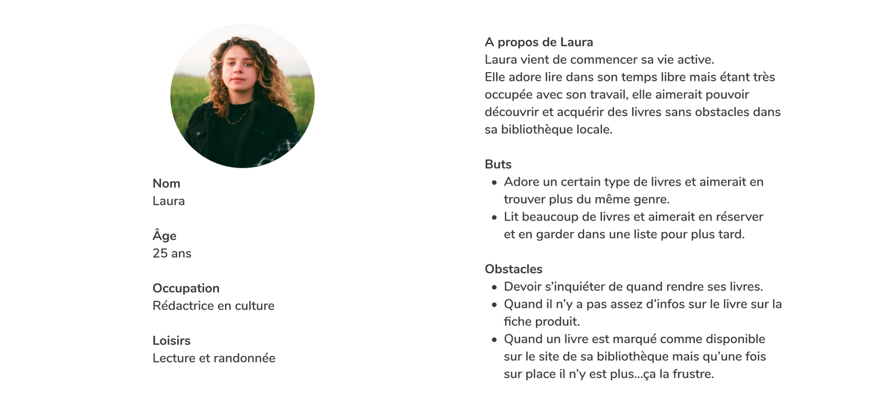User flow
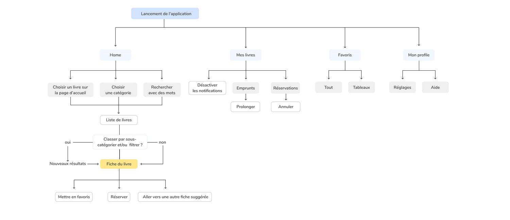Premiers wireframes
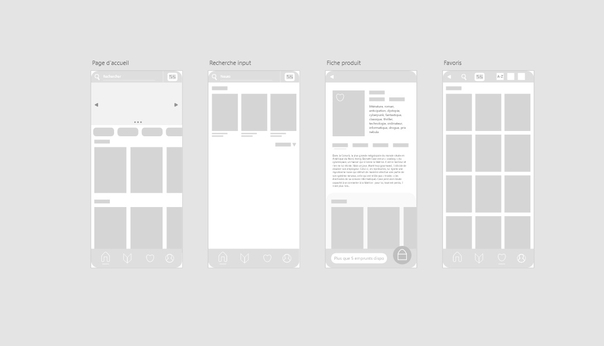
5. User tests et itération
Voici les améliorations majeures apportées à l'UX du projet après des user tests conduits avec des prototypes allant du paper prototype à l'hi-fi prototype cliquable.
Les user tests ont été effectués sur base d'un task design et d'un think aloud protocol.
1. Emprunts
Plusieurs prototypes ont été réalisés pour la section des emprunts et j'ai vite remarqué que les utilisateurs préféraient lorsqu'ils pouvaient vérifier tous leurs emprunts d'un seul coup d'oeil au lieu de les feuilleter un par un.
La piste du calendrier a également été vite écartée car elle étendait trop le champ de vision.
2. Résultats de recherche
Ajout de plusieurs éléments sur l'écran des résultats de recherche pour faciliter la navigation et la compréhension par l'utilisateur. 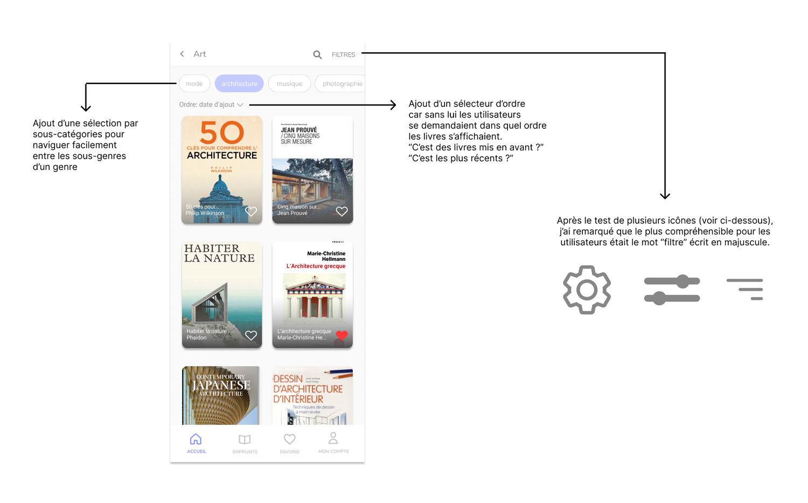
6. Solutions
Voici les solutions principales développées après les différentes recherches et user tests.
1. Accueil et personnalisation
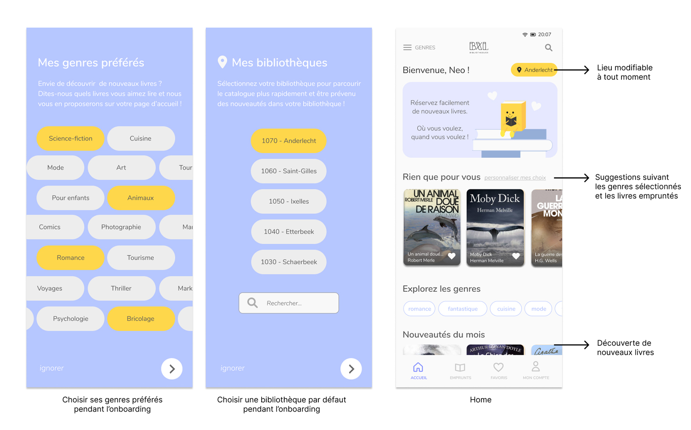2. Navigation
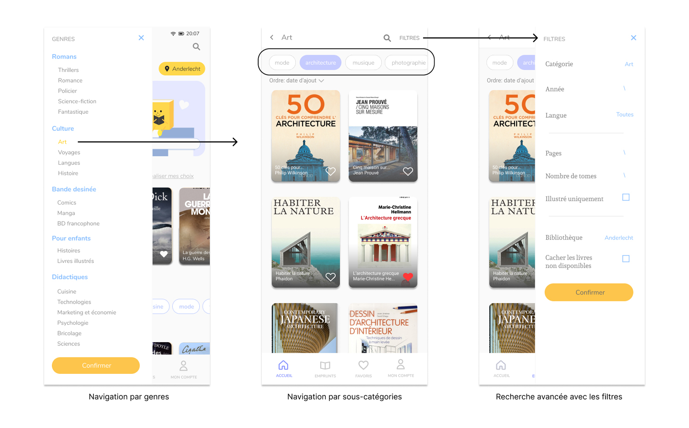3. Fiche du livre
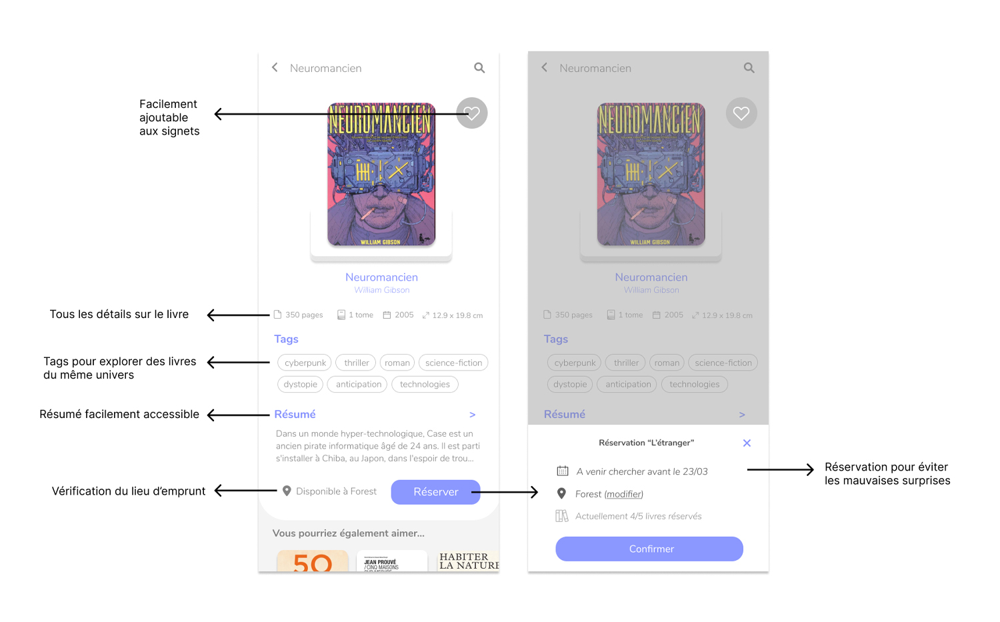4. Emprunts et réservations
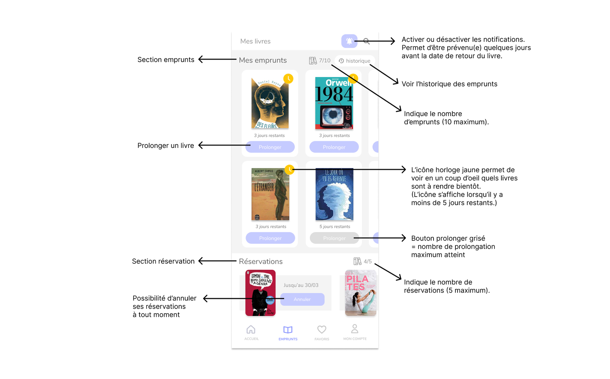5. Favoris
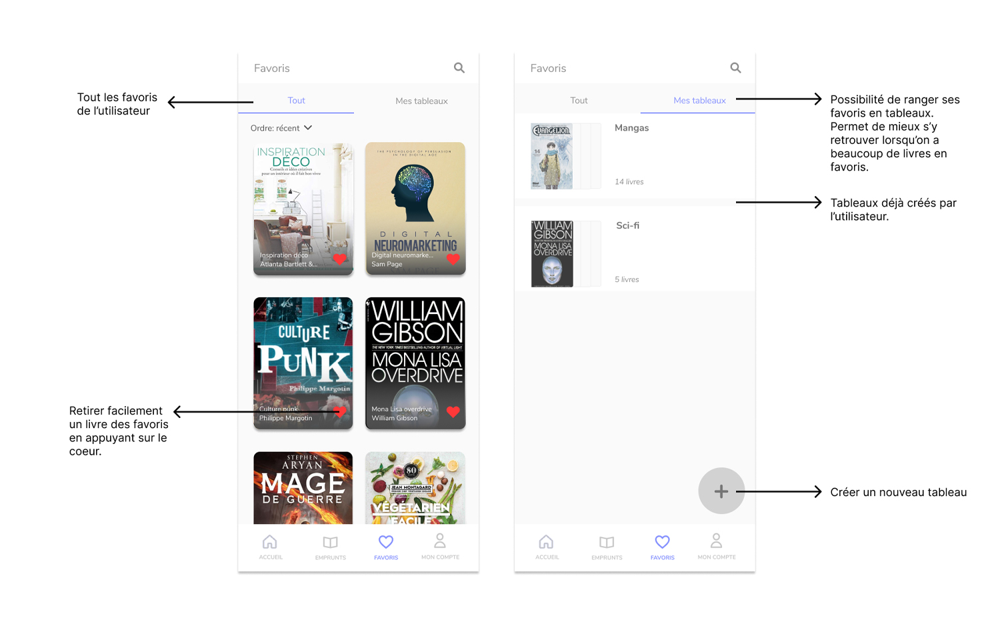7. Charte graphique
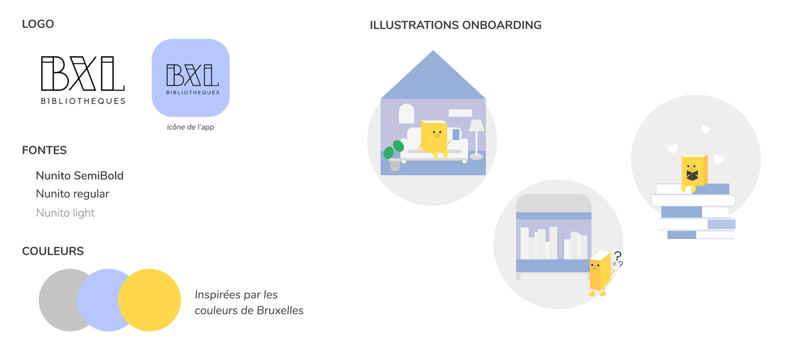
8. Ce que j'ai appris
- Dans la phase de recherche, il est important de ne pas se cantonner aux questions préparées pour les interviews mais de laisser place à un dialogue.
Par exemple, si on demande "lis-tu des livres ?" quelqu'un peut nous répondre "non" - alors que des lectures d'articles en ligne par exemple pourraient aussi être intéressantes pour notre recherche, même si cela se détache de notre sujet principal (les livres). - Le problème n'est pas toujours là où on l'attend, c'est pour cela qu'il faut faire des tests au plus vite ! Parfois, on pense que le problème va être à un endroit alors qu'il n'y aura aucun problème et inversement !
- Certaines choses ne seront pas lues mais c'est important de les laisser : par exemple le onboarding a été passé rapidement par la plupart des utilisateurs mais il est quand même important de le laisser pour les personnes qui sont moins habituées à utiliser des applications et qui auront plus besoin d'être guidées.
Merci d'avoir lu mon article !
Retourner tout en haut

- App
- Seconde main
- Mode

- Site
- Plantes
- E-shop